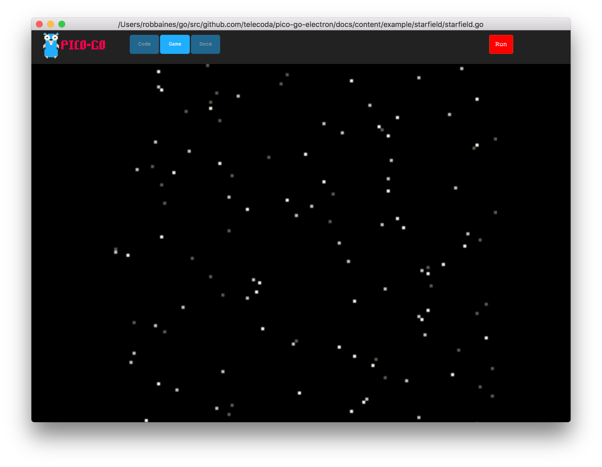

starfield
starfield
This is a simple project which creates an old skool starfield
example output

sourcecode
package main
/*
This is a project to demo an oldskool starfield
Copyright 2018 @telecoda
*/
import (
"math/rand"
"github.com/telecoda/pico-go-electron/console"
)
const (
// define these vars to be used in javascript canvas scaling code
screenWidth = 128
screenHeight = 128
)
type cartridge struct {
*console.BaseCartridge
s []int
}
// NewCart - initialise a struct implementing Cartridge interface
func NewCart() console.Cartridge {
return &cartridge{
BaseCartridge: console.NewBaseCart(),
}
}
/* This is the original tweetcart code
s={}w=128 r=rnd for i=1,w do s[i]={}p=s[i]p[1]=r(w)end::a::cls()for i=1,w do p=s[i]pset(p[1],i,i%3+5)p[1]=(p[1]-i%3)%w end flip()goto a
*/
// Init - called once
func (c *cartridge) Init() {
// init stars
/*
s={}
w=128
r=rnd
for i=1,w do
s[i]={}
p=s[i]
p[1]=r(w)
end
*/
w := screenWidth
c.s = make([]int, w, w)
for i := 0; i < w; i++ {
c.s[i] = rand.Intn(w)
}
}
// Update - called once every frame
func (c *cartridge) Update() {
}
// Render - called once every frame
func (c *cartridge) Render() {
c.ClsWithColor(console.PICO8_BLACK)
for i := 0; i < screenWidth; i++ {
c.PSetWithColor(c.s[i], i, console.ColorID(i%3+5))
c.s[i] = (c.s[i] - (i % 3)) % screenWidth
if c.s[i] < 0 {
c.s[i] += screenWidth
}
}
}
func main() {
// Create virtual console - based on cart config
con, err := console.NewConsole(console.PICO8)
if err != nil {
panic(err)
}
defer con.Destroy()
//con.ShowFPS(true)
cart := NewCart()
if err := con.LoadCart(cart); err != nil {
panic(err)
}
if err := con.Run(); err != nil {
panic(err)
}
}